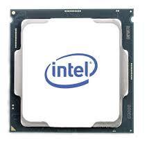
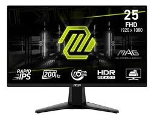
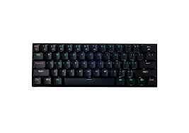
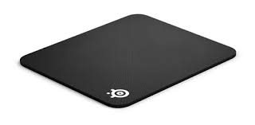
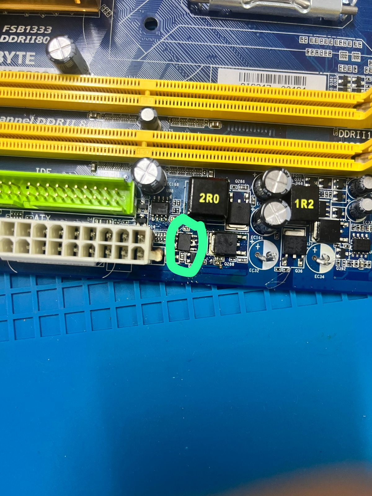
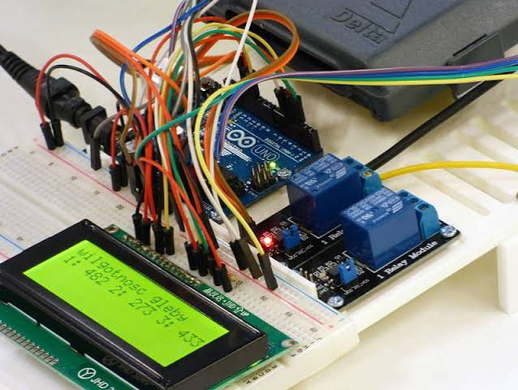

Bitácora de Laboratorio 2026
Alumno: Stefano di Gioia - 5to Año
Diagnóstico de Componentes (PC Tefo)
Ver Ficha Técnica Completa Ver Investigación Técnica de Placa Madre
Placa Madre
Modelo: Asus H310M

Microprocesador
Modelo: Intel Core I5 9400F
Arquitectura: 64 bits, x64
Ver Investigación Técnica de Procesador
Memoria RAM
Capacidad: 16GB(8GBx2) INSTALADA Marca: Crucial
Ver Investigación Técnica de Memoria RAM


Periféricos y Dispositivos E/S
Ver Ficha Técnica De Los PerifericosInterfaces físicas de comunicación con el usuario.

Monitor (Salida)
Resolución: 1920x1080 (Full HD) a 200Hz

Teclado(Entrada)
Conectividad: USB / Inalámbrico 2.4GHz
Mouse(Entrada)
Conectividad: USB / Inalámbrico 2.4GHz
Auriculares (Salida/Entrada)
Modelo: Redragon H848
Conectividad: Receptor USB-A / Bluetooth

Mousepad
Modelo: Steelseries Qck
Armado de Equipos (Presupuestos)
Documentación técnica de presupuestos redactada bajo normas APA.
PC Gaming (Presupuesto Libre)
Enfoque en máximo rendimiento gráfico y sistemas de refrigeración avanzados.
Ver Presupuesto GamerPC Oficina (Presupuesto Limitado)
Enfoque en ofimática, durabilidad y mejor relación costo-beneficio.
Ver Presupuesto OficinaMantenimiento y Laboratorio
Ficha Técnica Final
Mantenimiento preventivo y correctivo de una PC funcional del laboratorio.
Ver Ficha Técnica Final
Soldadura y Desoldadura
Recuperación de componentes electrónicos y reparación de pistas en placas de descarte.
Proyectos Arduino e IoT
Aplicación práctica de programación en C++ y electrónica para resolver problemas del mundo real.

Trabajos Arduino BIG 2026
Hardware: Microcontrolador ESP32, Protoboard, etc.
Ver trabajosLaboratorio: Diagnóstico y Mantenimiento
Documentación técnica de los procedimientos realizados en el entorno de pruebas.
Ficha Práctica de Hardware
Reconocimiento visual e inspección de componentes internos en equipos de descarte.
Ver Ficha CompletadaManual del Técnico
Protocolos de diagnóstico, desarme, uso del multímetro y recuperación de datos (Dongle).
Leer Manual de Protocolos
Soldadura y Recuperación
Prácticas de desoldadura de componentes y reparación de pistas en placas base averiadas.
Base de Datos de Conocimiento (Teoría)
Acceso al informe técnico completo sobre funcionamiento interno, arquitectura de componentes y resolución de cuellos de botella.
Descargar/Ver PDF Teórico Completo